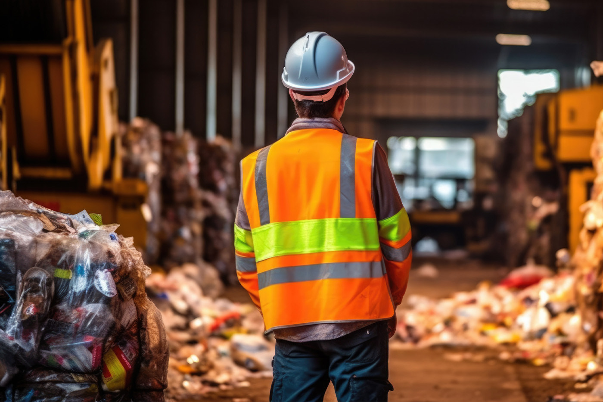

Τέλος στην ταφή απορριμμάτων
Επενδύσεις στη Βιώσιμη Διαχείρισή τους τώρα!


Η υφιστάμενη πρακτική διάθεσης απορριμμάτων σε Χώρους Υγειονομικής Ταφής (ΧΥΤΑ) αποτελεί μια άκρως επιβλαβή επιλογή για το περιβάλλον και την υγεία των πολιτών. Η Ελλάδα κατέχει ένα από τα υψηλότερα ποσοστά ταφής απορριμμάτων στην Ευρωπαϊκή Ένωση φτάνοντας το 80%, γεγονός που υποδηλώνει την ανάγκη για άμεσες αλλαγές. Σύμφωνα με στατιστικά στοιχεία του Οργανισμού Οικονομικής Συνεργασίας και Ανάπτυξης (ΟΟΣΑ) η χώρα σημειώνει αρνητικό ρεκόρ. Βρίσκεται στις πρώτες θέσεις αφήνοντας πίσω χώρες όπως η Βουλγαρία (40%), η Ισπανία (40%), η Ιταλία (20%) και η Φινλανδία (5%) με σημαντική διαφορά.
Σε μία εποχή στην οποία προβάλλεται διαρκώς η αξία της οικολογικής συνείδησης και η προτίμηση «πράσινων» μοντέλων, η διαχείριση απορριμμάτων σαφώς συνιστά κρίσιμη πρόκληση για την Ελλάδα.
Οι Οργανισμοί Τοπικής Αυτοδιοίκησης (ΟΤΑ) βρίσκονται πρόθυμα στην πρώτη γραμμή, παράλληλα όμως επιβαρύνονται και με το υπέρογκο κόστος του τέλους ταφής. Η αύξηση των τελών πλήττει τους πολίτες και τις επιχειρήσεις, με αποτέλεσμα η ανάγκη για βιώσιμη διαχείριση απορριμμάτων να καθίσταται επείγουσα. Η στήριξη των ΟΤΑ από το Κράτος μέσω χρηματοδοτήσεων και τεχνογνωσίας κρίνεται επιτακτική για την υλοποίηση ριζικών αλλαγών στον τομέα αυτό.
Μέσα στο κλίμα αναζήτησης πιο φιλικών για το περιβάλλον και ανώδυνων για την οικονομία εναλλακτικών, η βιώσιμη διαχείριση αποβλήτων έρχεται δυναμικά στο προσκήνιο. Πρόκειται για μια ολοκληρωμένη προσέγγιση, η οποία εστιάζει στην πρόληψη, μείωση, επαναχρησιμοποίηση, ανακύκλωση και κομποστοποίηση των απορριμμάτων, με στόχο την προστασία του περιβάλλοντος, την προαγωγή της δημόσιας υγείας και την εξοικονόμηση πόρων. Ένα βήμα προς τη σωστή κατεύθυνση αλλά ταυτόχρονα και υπερβολικά δαπανηρό είναι οι επενδύσεις σε Μονάδες Επεξεργασίας Αποβλήτων (ΜΕΑ) μέσω Συμπράξεων Δημόσιου και Ιδιωτικού Τομέα (ΣΔΙΤ).
Ωστόσο οι πρακτικές που υιοθετούνται οφείλουν να εξελιχθούν μέσω της χρήσης σύγχρονων και αποτελεσματικών μεθόδων διαχείρισης. Ενδεικτικά, η εφαρμογή προγραμμάτων χωριστής συλλογής βιοαποβλήτων και ανακυκλώσιμων υλικών σε όλη τη χώρα μπορεί να μειώσει τα τέλη ταφής κατά 30%. Μια ακόμα ελπιδοφόρα λύση είναι αναμφισβήτητα η ενεργειακή εκμετάλλευση βιοαποβλήτων, τόσο από το Φορέα Διαχείρισης Στερεών Αποβλήτων (ΦΟΔΣΑ) όσο και από Δήμους με τις απαραίτητες δυνατότητες. Η υλοποίησή της θα οδηγήσει όχι μόνο σε μείωση της ρύπανσης και των απορριμμάτων προς ταφή, αλλά μπορεί επίσης να προσφέρει οικονομικά οφέλη στους πολίτες, όπως μειωμένα τέλη και τιμολόγια ενέργειας.
Η στροφή προς σύγχρονες πρακτικές, η υιοθέτηση προγραμμάτων χωριστής συλλογής και η ενεργειακή αξιοποίηση των βιοαποβλήτων αποτελούν τα κλειδιά για την προστασία του περιβάλλοντος, τη μείωση του τέλους ταφής και τη βελτίωση της ποιότητας ζωής στις τοπικές κοινότητες.
Με τη δέουσα υποστήριξη από το κράτος, οι ΟΤΑ μπορούν να υλοποιήσουν τις παραπάνω δράσεις. Φυσικά, η καλλιέργεια περιβαλλοντικής συνείδησης μέσω εκστρατειών ενημέρωσης και εκπαιδευτικών προγραμμάτων είναι υψίστης σημασίας για την επιτυχή μετάβαση σε πιο βιώσιμες πρακτικές διαχείρισης απορριμμάτων.